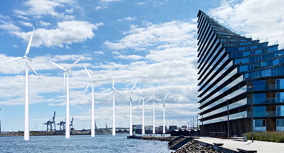
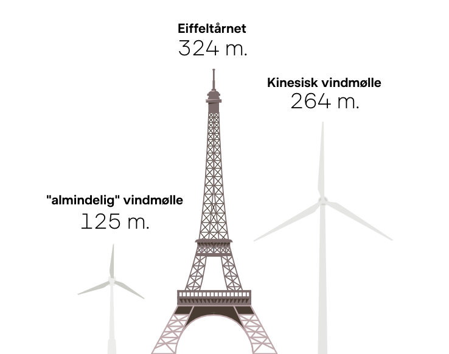

Læs om
Grøn energi
CO2-udledning
Bæredygtig transport
Bæredygtig mode
Bæredygtigt landbrug
FN's klimamål
Det kan DU gøre
Genbrug
Madspild
Spis grønt- vegetariske opskrifter
Nyheder
Nyeste teknologier
Seneste nyt fra politikere
Nyheder fra andre EU-lande
Så langt er vi
Gennemførte projekter
Status på EU's klimamål
Quiz dig selv
Klimaquiz
Beregn dit CO2-udslip
Q&A
Bliv medlem
Tilmelding til nyhedsbrev
Støt
Om os
Kontakt
Forside
Grøn energi:
Nye store vindmøller på vej
 